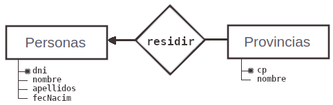

Conceptos utilizados en el diseño de las BBDD relacionales
- Entidad: Es es objeto del que se almacena información en la BBDD.
- Por ejemplo, en un taller mecánico serían entidades el automóvil, los mecánicos, clientes, las facturas,...
Cuando implementamos la base de datos, cada entidad dará lugar a una tabla.
- Ocurrencia de Entidad: Un individuo concreto perteneciente a una entidad, individuo del que estamos almacenando información.
- Por ejemplo, de la entidad automóvil, cada uno de los coches del taller será una ocurrencia de entidad.
Cuando implementamos la base de datos, cada ocurrencia de entidad dará lugar a un registro.
- Atributos: Cualquier característica de la entidad de la que vamos a almacenar información.
- Por ejemplo, del automóvil podrían ser atributos: la matrícula, el modelo, el año de fabricación, color, la descripción de la avería, el propietario, etc.
Por otro lado, tenemos los registros y campos:
- Registros: es el lugar donde se almacenan los valores concretos de cada
ocurrencia de entidad. Cada registro es un conjunto de valores de atributo para
alguna ocurrencia de entidad.
- Un registro podría ser: QQZ 1234, Fiat 500, 2017, rojo, fallo en sistema eléctico, Julio Pérez.
- Campos: Un registro se divide en campos. Un campo es cada uno de los valores de atributo.
Por ejemplo, un campo podría ser Fiat 500.
El modelo relacional en las matemáticas
Las bases de datos relacionales se basan en un modelo matemático (álgebra relacional) desarrollado por Frank Codd en 1970.

En este modelo la base de datos es percibida por el usuario como un conjunto de tablas bidimensionales para almacenamiento de datos, y unas relaciones entre tablas que se establecen a través de alguno de sus atributos.
Relación Matemática En el modelo matemático las tablas se denominan relaciones y las filas tuplas. El nombre de modelo relacional viene del concepto matemático de relación: una relación entre estos dos conjuntos A y B es cualquier subconjunto del producto cartesiano AxB. Gente = { {Ana,28}, {Luis,24}, {Felipe,28}, {Marta,44} } Provincias = { {28,Madrid}, {44,Teruel}, {24,León} } - El producto cartesiano son todas las combinaciones posibles con los elementos de los conjuntos: Gente X Provincias = { {Ana,28, 28,Madrid}, {Luis,24, 28,Madrid}, {Felipe,28, 28,Madrid}, {Marta,44, 28,Madrid} {Ana,28, 44,Teruel}, {Luis,24, 44,Teruel}, {Felipe,28, 44,Teruel}, {Marta,44, 44,Teruel} {Ana,28, 24,León}, {Luis,24, 24,León}, {Felipe,28, 24,León}, {Marta,44, 24,León} } - Una relación es un subconjunto del producto cartesiano: Relación-Guay = { {Ana,28, 28,Madrid}, {Luis,24, 24,León}, {Felipe,28, 28,Madrid}, {Marta,44, 44,Teruel} } Grado y cardinalidad El grado es el número de atributos de una tabla y la cardinalidad el número de elementos de un conjunto: Gente: grado 2, cardinalidad 4 Provincias: grado 2, cardinalidad 3 Gente x Provincias: grado 2+2 = 4, cardinalidad 4x3 = 12 Relación-Guay: grado 4, cardinalidad 4
Se establecen los conceptos de:
- dominio: Es el conjunto de todos los valores que puede tomar un determinado atributo.
- Por ejemplo, el dominio del atributo "modelo" son todos los modelos de coches del mercado.
El dominio para el atributo "sexo" podría ser { "M", "F" }.
Una característica fundamental de los dominios es que sean atómicos, es decir, que los valores
contenidos en los atributos no se pueden separar en valores de dominios más simples.
- Si una persona tiene dos viviendas, podemos crear dos atributos "Dirección", "Dirección-2".
- Pero si estamos guardando información de la vivienda, crearemos dos registros.
- Y siempre nos quedará la opción de crear un atributo "Observaciones".
- clave: Una clave es un atributo o conjunto de atributos que identifica de forma única a un registro.
- Por ejemplo, el atributo "matrícula" es un campo clave, también el atributo "nº de bastidor" podría ser clave.
- Para un mecánico el [DNI] podría ser clave, también el [nº afiliación SS] podría ser clave.
También su [nombre] y [apellidos] podría ser clave, si no contratamos a otro que se llame igual. O podríamos generar nosotros nuestro propio [código de identificadión] para cada mecánico.
👉 El atributo (o atributos) que actúa como clave no puede repetirse.
- clave primaria y claves alternativas: Cuando diseñemos una BBDD seleccionaremos una única clave para cada tabla, que denominaremos clave primaria. Al resto de posibles claves las denominaremos claves alternativas.
El SGBD convierte la clave primaria en atributo índice. Luego, nosotros podremos definir otros atributos como índice para agilizar las búsquedas a través de ese atributo.
- relaciones: Existe una relación entre tablas cuando éstas comparten algún atributo, que suele ser clave en una de ellas.
- clave foránea o clave ajena: Cuando una tabla recibe la clave de otra tabla a través de una relación, a ese atributo se lo denomina clave ajena o foránea.
Diagrama Entidad-Relación: 
El atributo cp que es clave en la tabla de PROVINCIAS, va a aparecer en la tabla de PERSONAS, para conocer en qué provincia vive cada individuo:
Tablas:
PROVINCIAS = { cp, nombreProv } ← cp es clave en PROVINCIAS
PERSONAS = { DNI, fecNac, apellidos, nombre, cp (f) } ← cp es clave foránea en PERSONAS
Cuando diseñemos nuestra BBDD impondremos unas ...
- restricciones de integridad: condiciones que deben cumplir los datos, según las necesidades de nuestro modelo basado en la realidad.
Por ejemplo, podemos exigir que la edad de una persona no supere los 130 años, o que el campo de apellidos no quede en blanco. O que una matrícula tenga el formato "AAA 9999"
Un ejemplo de restricción de integridad que siempre debe cumplirse es la llamada ...
- integridad referencial: Todos los valores que tome una clave foránea X, deben tener su correspondencia en la tabla donde X es clave.
Por ejemplo, el siguiente registro no cumpliría la integridad referencial:
("5199255X", "1/1/2001", "Montero Monte", "Matilde", 328)
porque no hay ninguna provincia con código 328 (suponemos son números del 1 al 52).